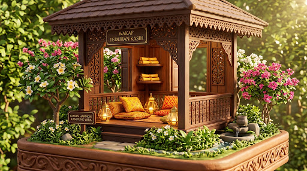
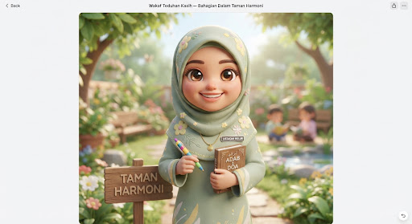

Wakaf Teduhan Kasih
psychology Pondok adab bertutur santun warga bertuah

Wakaf Teduhan Kasih
Ruang Istirahat Berbudi & Bersyukur

Ustazah Melur
Guru CilikPembimbing Budi Pekerti KSSR
“Ahlan wa sahlan ke Wakaf Teduhan Kasih, Wira Adam! Gazebo teduh ini adalah tempat kita berehat dan mengamalkan adab bertutur kata yang lemah lembut serta saling menghormati ahli keluarga dan warga kampung. Mari kita pilih tutur kata yang paling sopan!”
Uji Minda Budi: Tutur Kata Santun Kepada Ibu Bapa & Jiran
Apabila meminta bantuan daripada ibu bapa atau jiran sekampung di anjung wakaf, apakah ungkapan budi bahasa yang paling terpuji?
Ucapan ‘tolong’, ‘terima kasih’ dan ucapan salam mendatangkan kasih sayang serta keberkatan dalam keluarga dan jiran tetangga.